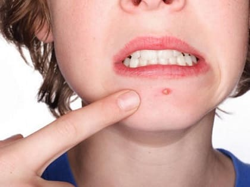
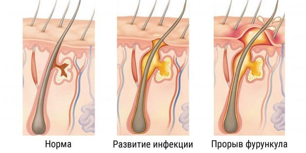

Фурункул — небольшая красная припухлость на коже, напоминающая большой прыщ. Они могут появляться на любом участке кожи, но чаще всего — в подмышках, на ягодицах, плечах, шее и лице.
ПРИЧИНЫ
Фурункул — результат бактериального инфицирования волосяного фолликула или кожной поры. Бактерии золотистого стафилококка (Staphylococcus aureus) обычно живут у нас на коже, не доставляя неприятностей, однако иногда они могут попасть внутрь поры потовой железы или волосяного фолликула и вызвать воспаление со всеми его спутниками (усиление кровотока, приток лейкоцитов и других иммунокомпетентных клеток), прибывающими к месту событий, чтобы бороться c инфекцией. Это вызывает развитие фурункула. Фурункулы могут образовываться, и когда бактерии с поверхности кожи попадают внутрь через ее повреждения — ссадины или царапины. Дети, страдающие диабетом, экземой, иммунодефицитами, анемией, более склонны к образованию фурункулов, поэтому уведомите своего врача, если у вашего ребенка было более чем три фурункула.
ЧТО ДЕЛАТЬ
Иммунная система ребенка, как правило, борется с инфекцией, и через несколько дней фурункул проходит. Вы можете помочь, делая следующее:
Мойте фурункул. Несколько раз в день осторожно мойте кожу вокруг фурункула мылом и теплой водой.
Горячий компресс. Возьмите чистую ткань, смочите ее горячей водой и наложите как компресс на область фурункула, делайте так 3—4 раза в день. Это поможет ускорить образование «головки» фурункула, чтобы он мог дренироваться (убедитесь, что вода не вызовет ожог!).
Дайте фурункулу прорваться самостоятельно. НЕ ПЫТАЙТЕСЬ ВЫДАВИТЬ его или сорвать его головку. Это может способствовать проникновению инфекции в более глубокие слои кожи. Если фурункул прорвался, продолжайте компрессы с горячей водой, чтобы улучшить отток содержимого. Вымойте кожу вокруг теплой водой с мылом. Нанесите мазь с антибиотиком, чтобы ускорить заживление. |
Накройте фурункул. Если головка фурункула вскрылась, закройте ее стерильной повязкой, чтобы воспрепятствовать распространению инфекции.

КОГДА ВОЛНОВАТЬСЯ
Обратитесь к врачу, если:
При таких симптомах врач может назначить антибиотик перорально и рассказать, как обрабатывать фурункул дальше. Фурункул, развиваясь, может превратиться в абсцесс. В этом случае необходимо его вскрыть хирургически, чтобы полностью очистить от инфекции. Обычно это быстрая процедура, которую выполняют амбулаторно. При некоторых больших абсцессах требуется госпитализация на небольшой срок для лечения антибиотиками, вводимыми внутривенно, чтобы полностью избавиться от инфекции.
ПРОФИЛАКТИКА
Фурункулы у детей могут рецидивировать, ими даже могут заразиться другие члены семьи. Риск этого можно уменьшить, предприняв следующие шаги:
Здоровье ребенка от докторов Сирс / Сирс У. и др.